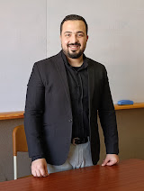

01 — LEARN
كورسات التسويق
مسار للتعلّم وفهم الأفكار التسويقية وربطها بالتطبيق. نحدّد البرنامج المناسب حسب مستواك والمهارة اللي عايز تطوّرها.
أنا محمد طارق. أقدّم كورسات واستشارات في التسويق، وأدير شركة انتيليفو للتسويق. هنا مساحة تجمع المعرفة الأكاديمية والأسئلة العملية التي تقابلنا في الشغل.

عايز تطوّر معرفتك، ولا تناقش تحديًا في مشروعك؟ اختار المسار الأقرب ليك، ونحدّد التفاصيل المناسبة.
مسار للتعلّم وفهم الأفكار التسويقية وربطها بالتطبيق. نحدّد البرنامج المناسب حسب مستواك والمهارة اللي عايز تطوّرها.
مساحة لمناقشة التحدّي التسويقي اللي بيواجهك، وترتيب الأسئلة والأولويات للوصول إلى رؤية أوضح للخطوة التالية.
أنا محمد طارق، حاصل على درجة الماجستير في التسويق، ومدير شركة انتيليفو للتسويق. أقدّم كورسات واستشارات في التسويق، وأهتم بتبسيط الأفكار وتحويل النقاش التسويقي إلى أسئلة واضحة يمكن البناء عليها.
هدفي في المساحة دي إنك تتعرّف على طريقتي في التفكير، وتختار شكل التعاون المناسب لاحتياجك، سواء في التعلّم أو الاستشارات.
لو لسه بتبدأ، تحديد المفاهيم وفهم العميل والسوق يساعدك تختار اللي تتعلّمه بترتيب أوضح.
محاور توضيحية للنقاش، وليست إعلانًا عن برامج متاحة حاليًا. تفاصيل الكورسات تُضاف بعد اعتمادها.
لو هدفك تعلّم مهارة وبناء فهم منظم، فالكورس أقرب. ولو عندك تحدٍّ محدد في مشروع أو قرار محتاج مناقشة، فالاستشارة أقرب.
النموذج الحالي يوضّح شكل الخدمات. أسماء البرامج والمواعيد والأسعار وطريقة الحجز هتتضاف بعد تأكيد التفاصيل.
جهّز نبذة عنك، وهدفك، والتحدّي اللي بيواجهك. زر «جهّز استفسارك» يساعدك تكتب رسالة جاهزة للنسخ. وسيلة التواصل المباشرة لسه تحت التجهيز.
قول لي أنت فين دلوقتي، وعايز توصل لإيه. البداية الجيدة سؤال واضح.